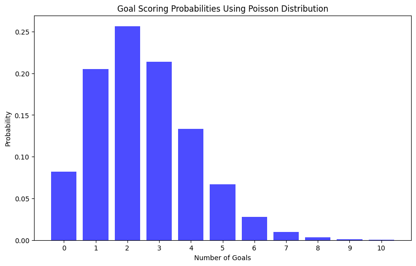
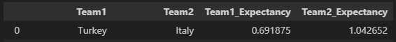
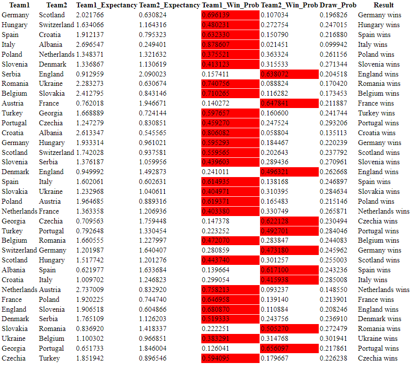

import pandas as pd
import numpy as np
from scipy.stats import poisson
import matplotlib.pyplot as pltGiriş
Poisson dağılımının nasıl çalıştığını ve 2024 Avrupa Futbol Şampiyonası grup maçları ya da genel olarak futbol maçları için nasıl öngörülerde bulunabileceğimizi öğreneceğiz.
Kullanılacak Kütüphaneler
Poisson Dağılımı
Poisson Dağılımının Tanımı
Poisson dağılımı, istatistik ve olasılık teorisinde sıkça kullanılan bir olasılık dağılımıdır. Adını Fransız matematikçi Siméon Denis Poisson’dan alan bu dağılım, belirli bir zaman dilimi içinde belirli bir olayın meydana gelme olasılığını modellemek için kullanılır. Özellikle nadir olayların incelenmesinde etkilidir.
Poisson dağılımı, aşağıdaki gibi çeşitli alanlarda geniş bir uygulama yelpazesine sahiptir.
- Telekomünikasyon: Bir telefon hattında belirli bir süre içinde alınan çağrıların sayısını modellemek.
- Web Trafiği: Bir web sitesinde belirli bir süre içinde gerçekleşen tıklama sayısını tahmin etmek.
- Kalite Kontrol: Üretim hattında belirli bir zaman diliminde meydana gelen hata veya kusur sayısını izlemek.
- Sağlık Hizmetleri: Acil servise belirli bir zaman diliminde gelen hasta sayısını tahmin etmek.
- Doğal Afetler: Belirli bir bölgede meydana gelen deprem veya sel gibi olayların sayısını modellemek.
Poisson dağılımını kullanmak için aşağıdaki koşulların sağlanıp sağlanmadığına bakmak gerekiyor.
- Olaylar belirli bir zaman diliminde veya alanda bağımsız olarak meydana gelir. Bir maçta atılan gollerin sayısı, maçtaki diğer olaylardan (örneğin, kart gösterme, faul yapma, köşe vuruşu kullanma) etkilenmez. Her gol atışı birbirinden bağımsızdır ve diğer olayları etkilemez.
- Bir olayın meydana gelme olasılığı, belirli bir zaman dilimi veya alan içinde sabittir. Örneğin, bir takımın ortalama olarak maç başına 2 gol attığını düşünelim. Bu, belirli bir zaman aralığında (örneğin, sezon boyunca) sabit bir gol oranı olduğunu gösterir.
- İki veya daha fazla olayın aynı anda meydana gelme olasılığı ihmal edilecek kadar küçüktür. Örneğin, aynı an içinde iki takımın da birer gol atması çok nadir bir durumdur. Bu durum, Poisson dağılımının uygulanabilirliği için gerekli olan nadirlik koşulunu sağlar.
Poisson dağılımında ortalama ve varyans birbirine eşittir. Yani, \(E(X) = Var(X)\) olacaktır.
Poisson dağılımının olasılık kütle fonksiyonu (PMF) aşağıdaki gibi ifade edilir.
\(P(X=k) = \frac{\lambda^ke^{-\lambda}}{k!}\)
- \(X\): Belirli bir zaman diliminde meydana gelen olayların sayısı
- \(k\): Olay sayısı (0, 1, 2, …)
- \(\lambda\): Belirli bir zaman diliminde beklenen olay sayısı (ortalama)
- \(e\): Euler sabiti (~2.71828)
Futbol Maçlarında Poisson Dağılımının Kullanımı
Poisson dağılımı, futbol maçlarında bir takımın belirli bir maçta atacağı gol sayısını öngörmek ve sonuç olasılıklarını hesaplamak için kullanılabilir. Örneğin, belirli bir takımın ortalama olarak 2.5 gol attığını varsayalım (\(\lambda\)=2.5). Bu durumda, bu takımın 0, 1, 2, 3, … gol atma olasılıklarını hesaplayabiliriz.
Bir takımın ortalama olarak 2.5 gol attığını düşünelim ve 0’dan 10’a kadar gol atma olasılıklarını hesaplayalım.
lambda_goals = 2.5
goal_counts = np.arange(0, 11)
poisson_probabilities = poisson.pmf(goal_counts, lambda_goals)
for i, p in zip(goal_counts, poisson_probabilities):
print(f"Probability of scoring {i} goals: {p:.4f}")
plt.figure(figsize=(10, 6))
plt.bar(goal_counts, poisson_probabilities, color='blue', alpha=0.7)
plt.xlabel('Number of Goals')
plt.ylabel('Probability')
plt.title('Goal Scoring Probabilities Using Poisson Distribution')
plt.xticks(goal_counts)
plt.show()
# Çıktı:
# Probability of scoring 0 goals: 0.0821
# Probability of scoring 1 goals: 0.2052
# Probability of scoring 2 goals: 0.2565
# Probability of scoring 3 goals: 0.2138
# Probability of scoring 4 goals: 0.1336
# Probability of scoring 5 goals: 0.0668
# Probability of scoring 6 goals: 0.0278
# Probability of scoring 7 goals: 0.0099
# Probability of scoring 8 goals: 0.0031
# Probability of scoring 9 goals: 0.0009
# Probability of scoring 10 goals: 0.0002
Veri Setinin İçe Aktarılması ve Düzenlenmesi
Kullanacağımız veri setini Kaggle’dan indirebilirsiniz.
International football results from 1872 to 2024
Tüm veri setlerine ise buradan ulaşabilirsiniz.
Verileri yükleyecek ve düzenlemeleri yapacak fonksiyon load_data’dır.
def load_data(historical_file):
historical_results = pd.read_csv(historical_file)
historical_results['date'] = pd.to_datetime(historical_results['date'])
historical_results['home_team'] = historical_results['home_team'].replace('Czech Republic', 'Czechia')
historical_results['away_team'] = historical_results['away_team'].replace('Czech Republic', 'Czechia')
historical_results = historical_results[historical_results['tournament'].isin(['UEFA Euro','UEFA Euro qualification','UEFA Nations League'])]
historical_results = historical_results.dropna(subset=['home_score','away_score']).reset_index(drop=True)
historical_results['home_score'] = historical_results['home_score'].astype(int)
historical_results['away_score'] = historical_results['away_score'].astype(int)
return historical_results
historical_results = load_data('historical_results.csv')Yıllara özel filtreleme yapacak fonksiyon ise filter_historical_data’dır.
def filter_historical_data(historical_results, cutoff_date, countries):
filtered_results = historical_results[historical_results['date'] < cutoff_date]
filtered_results = filtered_results[
(filtered_results['home_team'].isin(countries['country'])) &
(filtered_results['away_team'].isin(countries['country']))
].reset_index(drop=True)
return filtered_resultsHesaplama ve Öngörü
Hesaplamanın Matematiği
Turnuvadaki ortalama gol beklentisini (average goal expectancy), her iki taraf için de saldırı gücü (attack strength) ve savunma gücünü (defence strength) hesaplamamız gerekiyor. Takımın gol beklentisi, hem takımın saldırı gücü ve savunma gücüne hem de karşı takımın saldırı ve savunma gücüne bağlıdır.
calculate_strengths ve calculate_goal_expectancy fonksiyonları ile yukarıda belirttiğimiz hesaplamaları yapacağız.
def calculate_strengths(historical_results_df):
def calculate_strengths_for_team(historical_results_df, column_team, column_score):
team_strength = {}
total_goals = historical_results_df[column_score].sum()
total_matches = len(historical_results_df[column_team])
total_avg = total_goals / total_matches
for team in historical_results_df[column_team].unique():
team_goals = historical_results_df.loc[historical_results_df[column_team] == team, column_score].sum()
team_matches = len(historical_results_df[historical_results_df[column_team] == team])
team_avg = team_goals / team_matches
team_strength[team] = team_avg / total_avg
return team_strength
home_attack_strength = calculate_strengths_for_team(historical_results_df, 'home_team', 'home_score')
away_attack_strength = calculate_strengths_for_team(historical_results_df, 'away_team', 'away_score')
home_defence_strength = calculate_strengths_for_team(historical_results_df, 'home_team', 'away_score')
away_defence_strength = calculate_strengths_for_team(historical_results_df, 'away_team', 'home_score')
return home_attack_strength, away_attack_strength, home_defence_strength, away_defence_strength
def calculate_goal_expectancy(matches, strengths, historical_results_df):
home_attack_strength, away_attack_strength, home_defence_strength, away_defence_strength = strengths
goal_expectancy = []
for index, match in matches.iterrows():
team1 = match['team1']
team2 = match['team2']
team1_attack_strength = home_attack_strength.get(team1, 1.0)
team2_defence_strength = away_defence_strength.get(team2, 1.0)
home_goals_avg = historical_results_df['home_score'].sum() / len(historical_results_df['home_team'])
team1_expectancy = team1_attack_strength * team2_defence_strength * home_goals_avg
team2_attack_strength = away_attack_strength.get(team2, 1.0)
team1_defence_strength = home_defence_strength.get(team1, 1.0)
away_goals_avg = historical_results_df['away_score'].sum() / len(historical_results_df['away_team'])
team2_expectancy = team2_attack_strength * team1_defence_strength * away_goals_avg
goal_expectancy.append((team1, team2, team1_expectancy, team2_expectancy))
return pd.DataFrame(goal_expectancy, columns=['Team1', 'Team2', 'Team1_Expectancy', 'Team2_Expectancy'])Son olarak, match_probabilities fonksiyonu ile olasılıkları hesaplayıp calculate_match_probabilities ile veri çerçevesini ortaya çıkaracağız.
def match_probabilities(lambda1, lambda2, max_goals=5):
probs = np.zeros((max_goals+1, max_goals+1))
for i in range(max_goals+1):
for j in range(max_goals+1):
probs[i, j] = (np.exp(-lambda1) * lambda1**i / np.math.factorial(i)) * (np.exp(-lambda2) * lambda2**j / np.math.factorial(j))
return probs / np.sum(probs)
def calculate_match_probabilities(goal_expectancy_df):
goal_expectancy_df['Team1_Win_Prob'] = 0.0
goal_expectancy_df['Team2_Win_Prob'] = 0.0
goal_expectancy_df['Draw_Prob'] = 0.0
for index, row in goal_expectancy_df.iterrows():
lambda1 = row['Team1_Expectancy']
lambda2 = row['Team2_Expectancy']
match_probs = match_probabilities(lambda1, lambda2)
goal_expectancy_df.at[index, 'Team1_Win_Prob'] = np.sum(np.tril(match_probs, -1))
goal_expectancy_df.at[index, 'Team2_Win_Prob'] = np.sum(np.triu(match_probs, 1))
goal_expectancy_df.at[index, 'Draw_Prob'] = np.sum(np.diag(match_probs))
return goal_expectancy_df2020 Avrupa Futbol Şampiyonası Grup Maçları Öngörüleri
2020 yılına ait verileri içe aktaralım.
euro_2020_countries = pd.read_excel('euro_2020_countries.xlsx')
matches_2020 = pd.read_excel('matches_2020.xlsx')
cutoff_date = '2021-06-11'
historical_results_2020 = filter_historical_data(historical_results, cutoff_date, euro_2020_countries)
strengths_2020 = calculate_strengths(historical_results_2020)
goal_expectancy_df_2020 = calculate_goal_expectancy(matches_2020, strengths_2020, historical_results_2020)
goal_expectancy_df_2020 = calculate_match_probabilities(goal_expectancy_df_2020)Örnek (Türkiye-İtalya)
Daha net anlamak adına Türkiye-İtalya maçı örneğine bakalım.
- Ev sahibi takım Türkiye ve deplasman takımı İtalya’nın saldırı gücü nedir?
Ev sahibi takım için saldırı gücü, ev sahibi takımın attığı ortalama gol sayısının turnuvadaki ev sahibi takımların attığı ortalama gol sayısına bölümüdür.
Türkiye 39 maçta 44 gol atarken, tüm takımlar 859 maçta 1284 gol atmıştır. Türkiye’nin saldırı gücü = (44/39) / (1284/859) = 0.7547727454269509’dur.
Deplasman takımı için saldırı gücü, deplasman takımının attığı ortalama gol sayısının turnuvadaki deplasman takımlarının attığı ortalama gol sayısına bölümüdür.
İtalya 48 maçta 45 gol atarken, tüm takımlar 859 maçta 911 gol atmıştır. İtalya’nın saldırı gücü = (45/48) / (911/859) = 0.8839873765093305’tir.
- Ev sahibi takım Türkiye ve deplasman takımı İtalya’nın savunma gücü nedir?
Ev sahibi takım için savunma gücü, ev sahibi takımın yediği ortalama gol sayısının turnuvadaki ev sahibi takımların yediği ortalama gol sayısına bölümüdür.
Türkiye 39 maçta 46 gol yerken, tüm takımlar 859 maçta 911 gol yemiştir. Türkiye’nin savunma gücü = (46/39) / (911/859) = 1.1121618959160122’dir.
Deplasman takımı için savunma gücü, deplasman takımının yediği ortalama gol sayısının turnuvadaki deplasman takımlarının yediği ortalama gol sayısına bölümüdür.
İtalya 48 maçta 44 gol yerken, tüm takımlar 859 maçta 1284 gol yemiştir. İtalya’nın savunma gücü = (44/48) / (1284/859) = 0.6132528556593977’dir.
- Ev sahibi takım Türkiye ve deplasman takımı İtalya’nın gol beklentisi nedir?
Ev sahibi takım için gol beklentisi, takımın saldırı gücü, rakibin savunma gücü ve ev sahibi takımların ortalama gol sayısının çarpımıdır.
Türkiye’nin saldırı gücü 0.7547727454269509, İtalya’nın savunma gücü 0.6132528556593977 ve ev sahibi takımların ortalama gol sayısı 1.4947613504074506’dır. Bu durumda Türkiye’nin gol beklentisi 0.6918750166413717’dir.
Deplasman takımı için gol beklentisi, takımın saldırı gücü, rakibin savunma gücü ve deplasman takımlarının ortalama gol sayısının çarpımıdır.
İtalya’nın saldırı gücü 0.8839873765093305, Türkiye’nin savunma gücücü 1.1121618959160122 ve ev sahibi takımların ortalama gol sayısı 1.060535506402794’tür. Bu durumda İtalya’nın gol beklentisi 1.0426517774212616’dır.
Peki, sonuçlar gerçekten de hesapladığımız gibi mi?

Sağlamasını yapmış olduk.
Sonrasında, maksimum 5 gol için olasılıkları hesaplayacağız.
Türkiye’nin gol beklentisine \(\lambda_T\); İtalya’nın gol beklentisine \(\lambda_I\) diyelim.
\(\lambda_T\) = 0.6918750166413717 ve \(\lambda_I\) = 1.0426517774212616’dır.
\(P(k; \lambda_T) = \frac{\lambda^ke^{-\lambda}}{k!}\)
Türkiye için gol olasılıkları:
\(P(0; \lambda_T) = \frac{0.6918750166413717^0 e^{-0.6918750166413717}}{0!}\)
\(P(1; \lambda_T) = \frac{0.6918750166413717^1 e^{-0.6918750166413717}}{1!}\)
\(P(2; \lambda_T) = \frac{0.6918750166413717^2 e^{-0.6918750166413717}}{2!}\)
\(P(3; \lambda_T) = \frac{0.6918750166413717^3 e^{-0.6918750166413717}}{3!}\)
\(P(4; \lambda_T) = \frac{0.6918750166413717^4 e^{-0.6918750166413717}}{4!}\)
\(P(5; \lambda_T) = \frac{0.6918750166413717^5 e^{-0.6918750166413717}}{5!}\)
İtalya için gol olasılıkları:
\(P(0; \lambda_I) = \frac{1.0426517774212616^0 e^{-1.0426517774212616}}{0!}\)
\(P(1; \lambda_I) = \frac{1.0426517774212616^1 e^{-1.0426517774212616}}{1!}\)
\(P(2; \lambda_I) = \frac{1.0426517774212616^2 e^{-1.0426517774212616}}{2!}\)
\(P(3; \lambda_I) = \frac{1.0426517774212616^3 e^{-1.0426517774212616}}{3!}\)
\(P(4; \lambda_I) = \frac{1.0426517774212616^4 e^{-1.0426517774212616}}{4!}\)
\(P(5; \lambda_I) = \frac{1.0426517774212616^5 e^{-1.0426517774212616}}{5!}\)
Maç için gol olasılıkları:
Her iki takımın olasılıklarının çarpımıdır. Örneğin, sonucun 1-2 olma olasılığına bakalım.
\(P(Türkiye=1) * P(İtalya=2) = 0.34637788 * 0.19161551 = 0.0663713741289188\)
Kod kullanarak aşağıdaki gibi hesaplnabilir.
lambda_T = 0.6918750166413717
lambda_I = 1.0426517774212616
goals = np.arange(0, 6)
probabilities_T = poisson.pmf(goals, lambda_T)
probabilities_I = poisson.pmf(goals, lambda_I)
prob_matrix = np.outer(probabilities_T, probabilities_I)
plt.figure(figsize=(10, 7))
plt.imshow(prob_matrix, cmap='viridis', aspect='auto')
for i in range(prob_matrix.shape[0]):
for j in range(prob_matrix.shape[1]):
plt.text(j, i, f'{prob_matrix[i, j]:.4f}', ha='center', va='center', color='white')
plt.xlabel('Italy Goals')
plt.ylabel('Turkey Goals')
plt.title('Goal Probability Matrix Heatmap')
plt.xticks(np.arange(len(goals)), goals)
plt.yticks(np.arange(len(goals)), goals)
plt.colorbar(label='Probability')
plt.show()
0-0, 1-1, 2-2, 3-3, 4-4 ve 5-5 birleşiminin altında kalan alanın toplamı Türkiye’nin, üstünde kalan alanın toplamı ise İtalya’nın kazanma olasılıklarıdır. Aynı gol sayılarının kesişimlerinin toplamı ise beraberlik olasılığıdır.
Örneğimizde, Türkiye’nin kazanma olasılığı 0.239113, İtalya’nın kazanma olasılığı 0.431935 ve beraberlik olasılığı 0.328952 çıkacaktır. Bu maçın sonucunda İtalya 3-0 kazanmıştı.
2020 Öngörüleri Ne Kadar Başarılı Olurdu?
def determine_winner_prob(row):
if row['Team1_Win_Prob'] > row['Team2_Win_Prob'] and row['Team1_Win_Prob'] > row['Draw_Prob']:
return f"{row['Team1']} wins"
elif row['Team2_Win_Prob'] > row['Team1_Win_Prob'] and row['Team2_Win_Prob'] > row['Draw_Prob']:
return f"{row['Team2']} wins"
else:
return "No Winner"
goal_expectancy_df_2020['result'] = goal_expectancy_df_2020.apply(determine_winner_prob, axis=1)
def determine_winner(row):
if row['team1_score'] > row['team2_score']:
return f"{row['team1']} wins"
elif row['team2_score'] > row['team1_score']:
return f"{row['team2']} wins"
else:
return "No Winner"
matches_2020['result'] = matches_2020.apply(determine_winner, axis=1)
matches_2020['prob_result'] = goal_expectancy_df_2020['result']
matches_equal_prob = matches_2020[matches_2020['result'] == matches_2020['prob_result']]
matching_count = len(matches_equal_prob)
result = matching_count / len(matches_2020)Başarı oranı %56 olmuştur ki bu da neredeyse yazı-tura atmak ile aynıdır.
2024 Avrupa Futbol Şampiyonası Grup Maçları Öngörüleri
Her ne kadar 2020 öngörüleri tatmin edici bir sonuç vermese de 2024 yılı için de öngörülerimizi yapalım.
euro_2024_countries = pd.read_excel('euro_2024_countries.xlsx')
matches_2024 = pd.read_excel('matches_2024.xlsx')
cutoff_date = '2024-06-14'
historical_results_2024 = filter_historical_data(historical_results, cutoff_date, euro_2024_countries)
strengths_2024 = calculate_strengths(historical_results_2024)
goal_expectancy_df_2024 = calculate_goal_expectancy(matches_2024, strengths_2024, historical_results_2024)
goal_expectancy_df_2024 = calculate_match_probabilities(goal_expectancy_df_2024)
goal_expectancy_df_2024['Result'] = goal_expectancy_df_2024.apply(determine_winner_prob, axis=1)Sonuçları daha güzel gösterebiliriz.
def highlight_max_prob(row):
max_prob = row[['Team1_Win_Prob', 'Team2_Win_Prob', 'Draw_Prob']].max()
return ['background-color: red' if v == max_prob else '' for v in row]
styled_matches = goal_expectancy_df_2024.style.apply(highlight_max_prob, axis=1)
html_styled_matches = styled_matches.to_html()
with open('styled_matches.html', 'w') as f:
f.write(html_styled_matches)
Yapılabilecek ilk eleştiri, beraberlik sonucunun çıkmaması olabilir. İkinci bir eleştiri, Poisson dağılıma uygun olduğu varsayımı yapılıp herhangi bir testin yapılmaması olabilir.
Başarısızlıktan öte, Poisson dağılımını anlamak var olanı ya da yeni yöntemleri geliştirmede etkili olacaktır. Bu, eğer atmadıysanız ilk adımınız olsun.
Gelecek içeriklerde görüşmek dileğiyle.